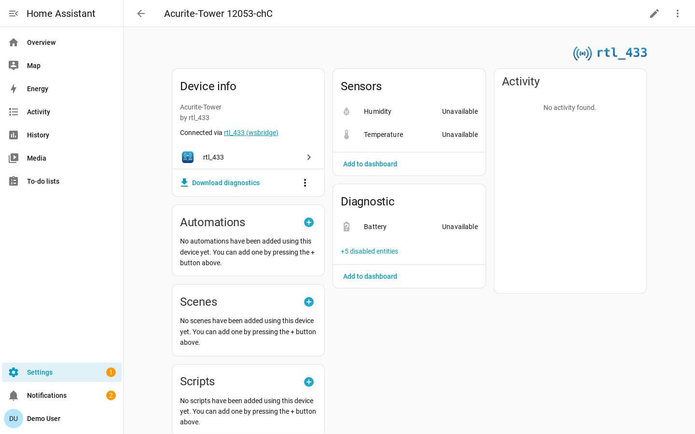

Availability¶
RF devices announce their presence only by transmitting, so the integration uses
a silence-based availability model. If no event for a device arrives within its
availability timeout, its entities become unavailable.

Transmit Cadences¶
How long a device can reasonably stay silent depends on the device type.
| Device type | Typical behavior |
|---|---|
| Periodic weather, temperature, soil, and air-quality sensors | Transmit on a regular cadence. |
| Door/window contacts, motion/PIR, buttons, doorbells, and security sensors | Transmit on events, sometimes with an occasional heartbeat. |
| Generic EV1527 door/PIR devices and parked TPMS sensors | May have no heartbeat and stay silent for days. |
Periodic devices use finite timeouts. Event-driven devices default to never expiring because a long silence is normal and does not imply failure.
Timeout Sources¶
The effective availability timeout is resolved in this order:
- Per-device override from Device settings.
- Hub default from Hub settings, if set.
- Device-class default.
- 600 second fallback.
Set a timeout to 0 to make a device never expire. This is already the automatic
default for event-driven devices.
Restart Behavior¶
On Home Assistant restart, the last known states are restored first. The timeout then runs from the restart time, and entities flip to unavailable only after the restored silence window elapses without a fresh event.
Last Seen Sensor¶
Every device gets a diagnostic timestamp sensor named Last seen. It reports when the device was last heard from and restores its previous value across restarts.
Last seen is enabled by default for event-driven devices because they never expire and the timestamp is their freshness signal. It is disabled by default for periodic devices, whose availability already conveys freshness.
Unlike measurement sensors, Last seen stays available after the device falls silent, so it can drive staleness automations.